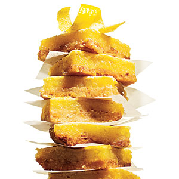

| Lemon Squares | |
|---|---|
|  |
1. Preheat oven to 350°.
2. Weigh or lightly spoon flour into dry measuring cups; level with a knife. Place flour, 1/4 cup powdered sugar, pine nuts, and salt in a food processor; pulse 2 times to combine. Add butter and canola oil. Pulse 3 to 5 times or until mixture resembles coarse meal. Place mixture into the bottom of an 8-inch square glass or ceramic baking dish coated with cooking spray; press into bottom of pan. Bake at 350° for 20 minutes or until lightly browned. Reduce oven temperature to 325°. 3. Combine granulated sugar and next 5 ingredients (through egg white) in a medium bowl, stirring with a whisk until smooth. Pour mixture over crust. Bake at 325° for 20 minutes or until set. Remove from oven, and cool completely in pan on a wire rack. Cover and chill for at least 2 hours. Sprinkle squares evenly with 2 tablespoons powdered sugar. |